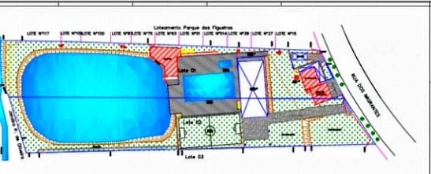
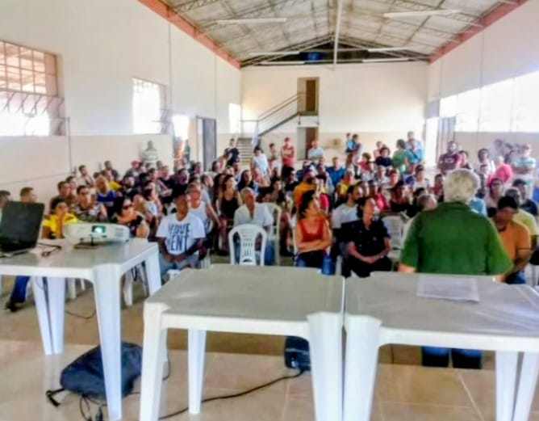
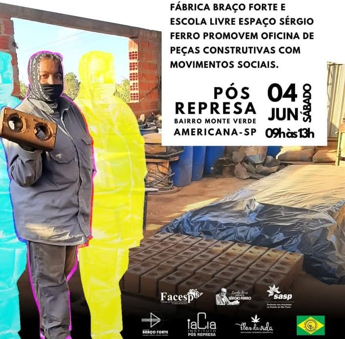

PROJETOS EM DESTAQUE

Arquitetura e Construção
Sindicato dos Jornalistas do Estado de São Paulo — SJSP
São Paulo
A comunicação visual desempenha um papel fundamental na identidade de qualquer organização, especialmente em entidades representativas como o Sindicato dos Jornalistas do Estado de São Paulo. Recentemente, o sindicato passou por um processo de reforma em suas instalações e atualização de sua comunicação visual, com o objetivo de alinhar sua presença física e digital à sua missão de defender os profissionais da imprensa e promover a valorização da categoria.

Arquitetura e Construção
Sindicato dos Professores de Campinas e Região — SINPRO
Campinas
O Sinpro investiu recentemente na reforma de suas instalações e na modernização de sua comunicação visual. O projeto buscou aliar funcionalidade, conforto e acessibilidade, garantindo um ambiente acolhedor para professores e associados. Além disso, a atualização visual reforça a identidade da instituição, transmitindo profissionalismo, transparência e valorização da categoria, fortalecendo a presença do sindicato na comunidade educacional.

Regularização Fundiária
REURB Monte Verde — Associação Monte Verde/Progresso Pós Represa
Americana
O projeto REURB no núcleo Monte Verde visa a regularização jurídica e urbanística, proporcionando dignidade e segurança patrimonial aos moradores. Através de um levantamento detalhado e adequação das infraestruturas essenciais, o projeto integra a comunidade à malha urbana oficial, garantindo o direito à moradia e promovendo a valorização imobiliária e o desenvolvimento social da região. Trata-se do maior ponto de conflito fundiário da Região Metropolitana de Campinas.

Regularização e Serviços
Sindicato dos Servidores de Paulínia — STSPMP
Americana
A entidade adquiriu dois lotes e realizou várias melhorias construtivas e ambientais, nas quais a Cooperativa Braço Forte fez as regularizações necessárias para a estabilidade legal do sindicato perante a Prefeitura Municipal. Entre elas estão a unificação de lotes, perícias edilícias e projetos de melhorias da sede.

Urbanismo
Cooperativa Pró Habitação do Estado de São Paulo — COOPHESP
Americana
A COOPHESP adquiriu a antiga granja COAVI, localizada na tríplice divisa entre Americana, Cosmópolis e Paulínia. Foram realizados projetos ambientais, incluindo a remoção de indivíduos (Árvore) exóticos, além do desenvolvimento de projeto urbanístico de loteamento e ocupação.

Formação e Tecnologia
As Oficinas de Arquitetura de Terra
Americana
A Cooperativa Braço Forte adquiriu a primeira máquina manual de bloco de terra compactada em 2019 e outras semi-hidráulicas nos anos seguintes. Com o apoio de professores e professoras da região, fundamos a Escola Livre Espaço Sérgio Ferro, na qual realizamos formação e aprimoramento de trabalhadores em arquitetura de terra e tecnologias de conhecimento popular de acordo com a Lei Federal n° 5.764/1971 - FATES.